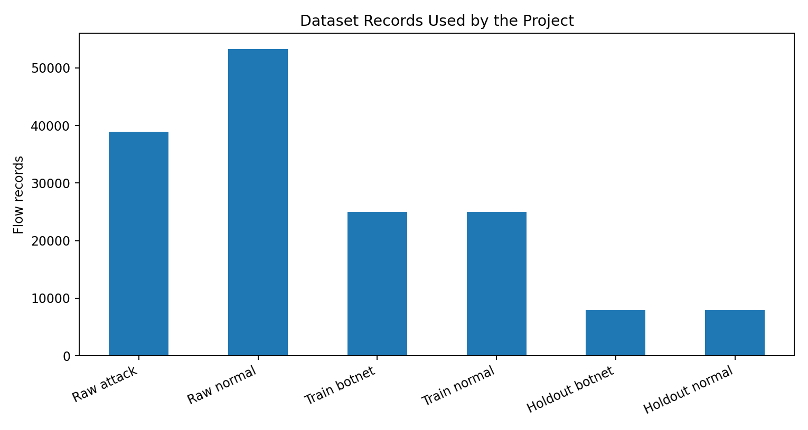
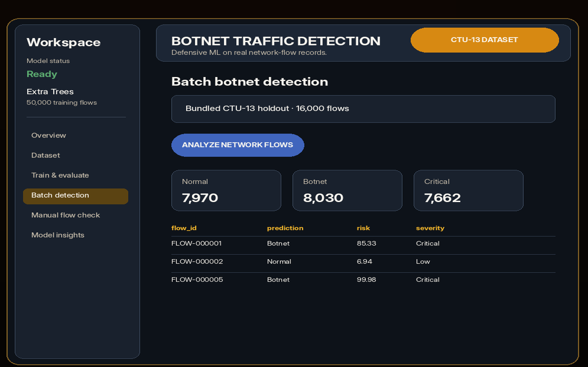
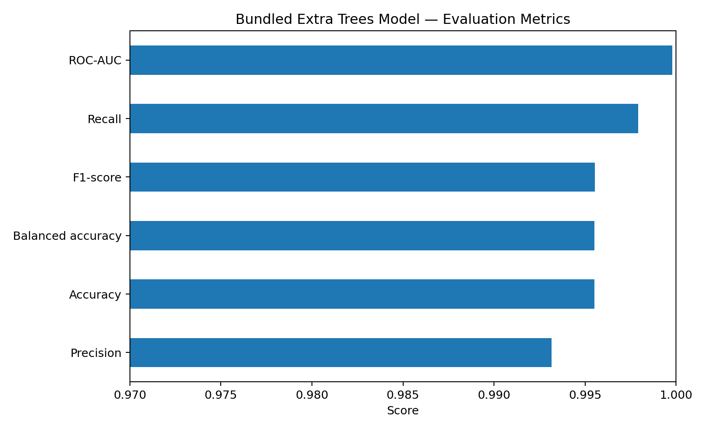
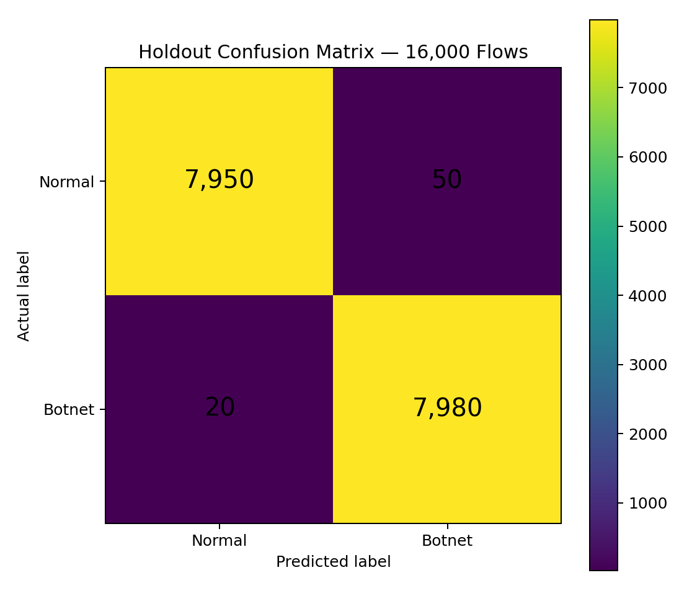

01 — OVERVIEW
From network-flow records to an analyst-ready decision.
The project demonstrates the complete defensive machine-learning lifecycle: loading and validating flow records, training or loading a classifier, generating predictions and probabilities, converting model output into risk and review indicators, and exporting reports for further analysis.
02 — PROBLEM
Large flow datasets are difficult to review manually.
Botnet activity may produce automated communication, scanning behavior, command-and-control traffic, and repeated connections. This project prioritizes compatible flow records for analyst review while keeping probabilities, confidence, and limitations visible.
No exploitation, credential collection, active scanning, or packet-payload inspection.
Metrics, confusion matrix, feature importance, and false-positive/false-negative trade-offs remain visible.
The dashboard, model, data preparation, and report generation run on a Windows computer.
Setup scripts, CLI workflows, bundled data, a pretrained model, tests, and documentation are included.
03 — DATA & PROVENANCE
Real CTU-13-derived flow records—not synthetic rows.

The source dataset is CTU-13, published by Stratosphere IPS / Czech Technical University in Prague. Processed files are created by selecting 29 numerical features, normalizing names, handling invalid values, balancing classes, and separating training and holdout records.
04 — SYSTEM
A modular workflow for data, modeling, inference, and reports.

| Component | Responsibility |
|---|---|
| Streamlit | Dashboard, tabs, charts, state, and downloads. |
| Scikit-learn | Extra Trees, Random Forest, Logistic Regression, preprocessing, and metrics. |
| Pandas + NumPy | Network-flow preparation and numerical processing. |
| Joblib | Pretrained model and metadata persistence. |
| CLI scripts | Dataset download, preparation, training, and CSV inference. |
| Unittest | Schema, inference, persistence, and severity validation. |
05 — FEATURES
One dashboard for training, evaluation, and detection.
Score many unlabeled flow records and export predictions or a Markdown incident report.
Enter the supported feature values and examine one prediction interactively.
Compare Extra Trees, Random Forest, and Logistic Regression.
Display probability, confidence, risk score, severity, and review status.
Inspect accuracy, balanced accuracy, precision, recall, F1, ROC-AUC, and confusion matrix.
Download CSV, JSON, Markdown, and Joblib artifacts.
06 — RESULTS
Strong holdout performance with limitations stated clearly.


07 — RESPONSIBLE USE & ROADMAP
A decision-support prototype, not proof of compromise.
- Analyze only network data you are authorized to access.
- Correlate predictions with firewall, endpoint, DNS, authentication, and asset-context logs.
- Protect flow metadata because it may reveal infrastructure patterns.
- Do not expose the Streamlit development server directly to the public internet.
Roadmap priorities include cross-dataset evaluation, probability calibration, SHAP explanations, data-drift monitoring, experiment tracking, a model registry, REST API deployment, controlled SIEM integration, and streaming flow ingestion.